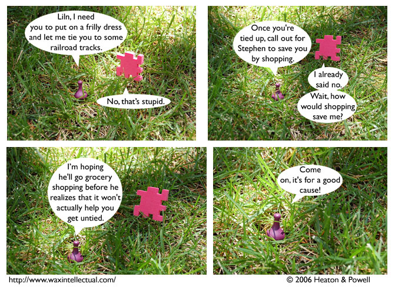

Strip #3
— Monday, June 19, 2006
Sid’s plan is not a statement about American comsumerism
Notes, Thoughts, &c.
Ben’s Notes
none
Lewis’s Notes
I think I’m most happy in this strip with how convoluted of a plan we were able to generate and dismiss in four panels. With any luck, the convolution will increase exponentially over time.